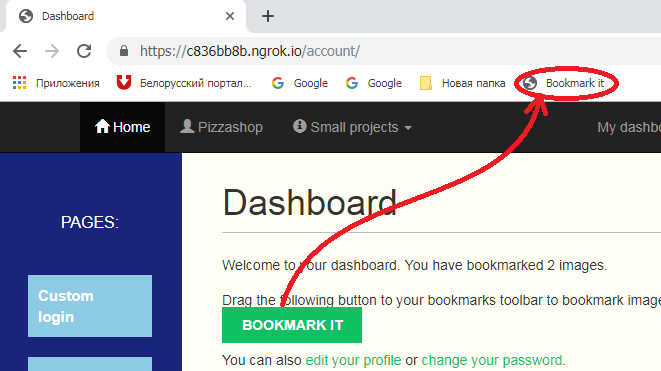

Welcome to your dashboard. You have bookmarked {{ total_images_created }} image{{ total_images_created | pluralize }}.
{% endwith %}Drag the following button to your bookmarks toolbar to bookmark images from other websites → Bookmark it
Example:

Now you can open any site with images and click "Bookmarke it" to bookmark liked images!
You can also edit your profile or change your password.